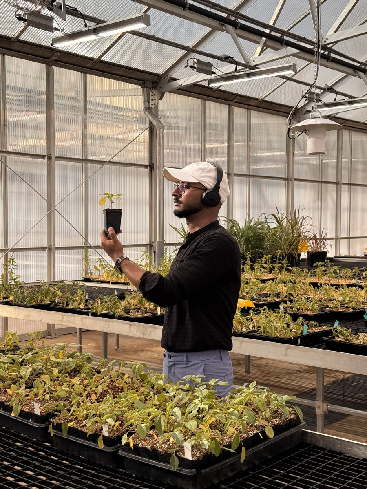
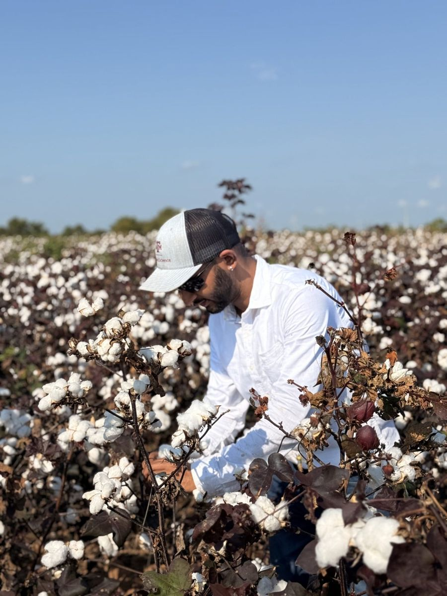
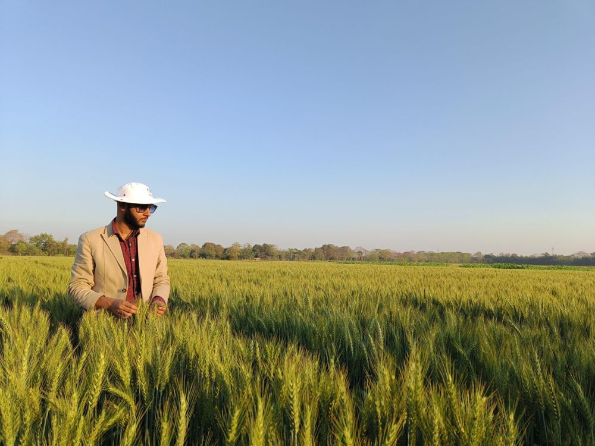
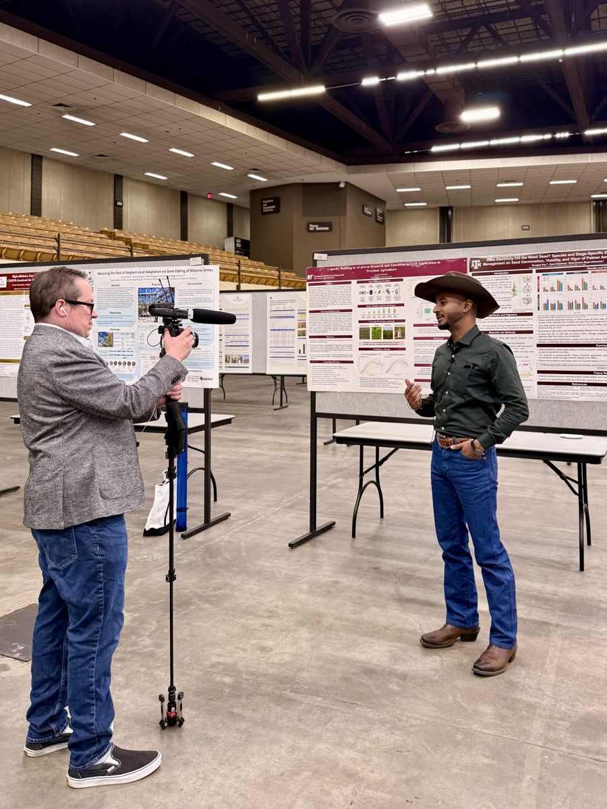
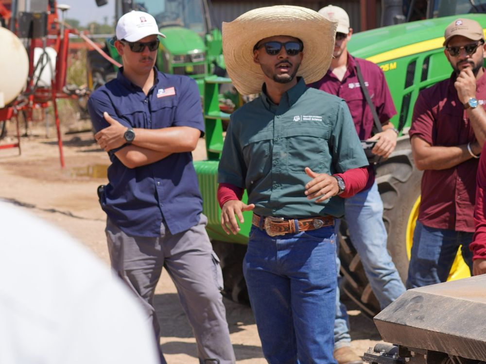
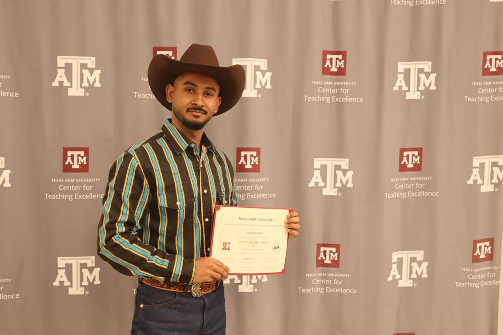
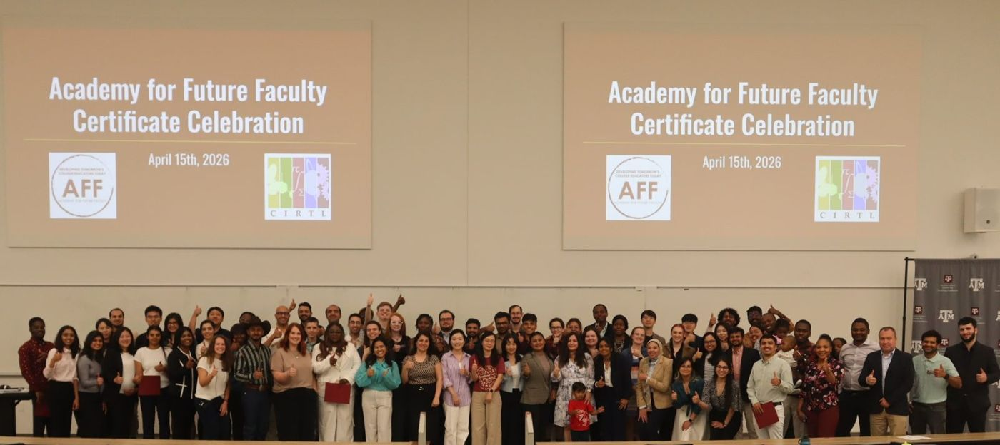
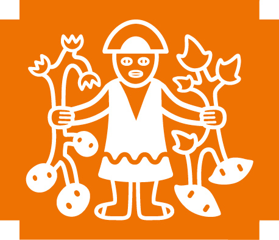
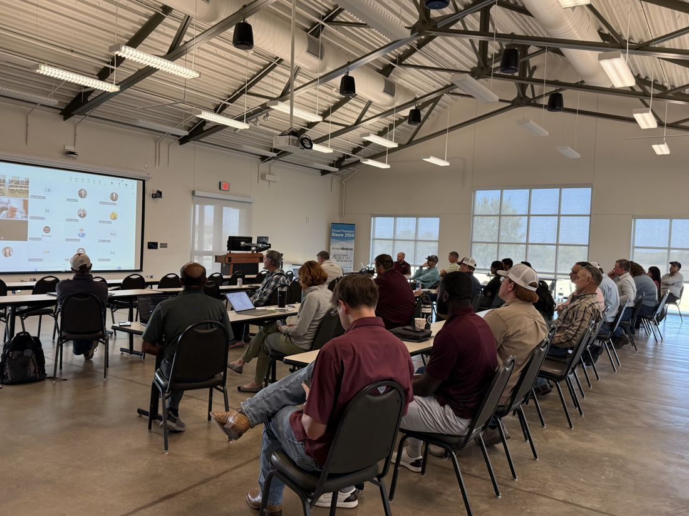
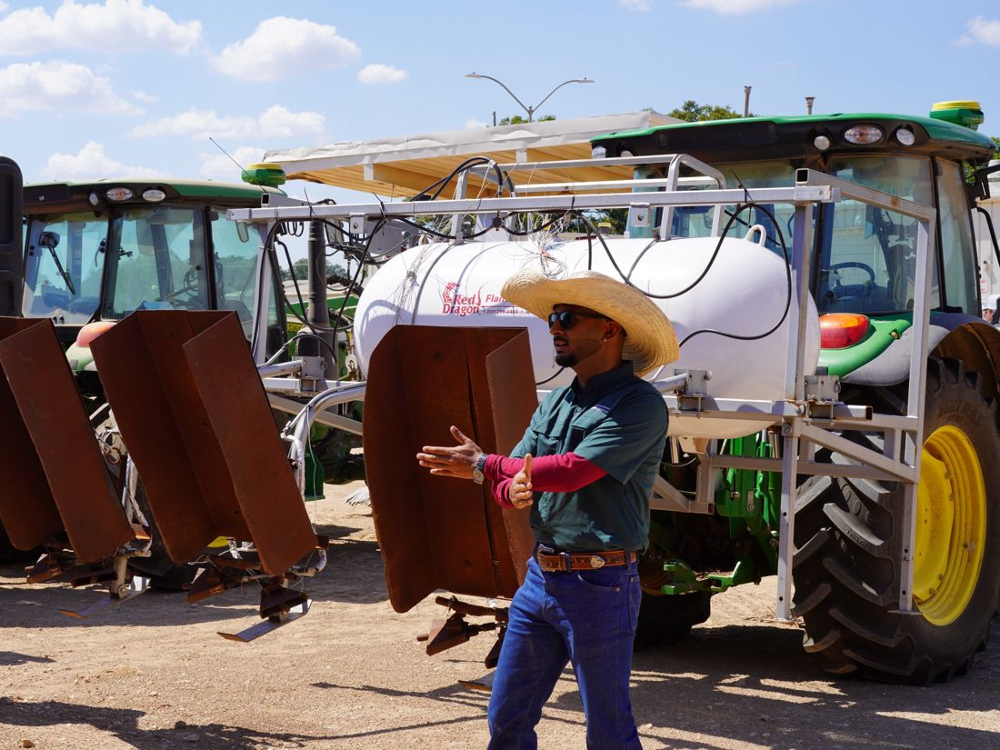

Electrical
Electrical weed control
A tractor-mounted Zasso unit sends current through weeds. I study what makes it work: soil moisture, weed growth stage and conductive liquid pre-sprays, plus its use with roller-crimping to end cover crops.
Ph.D. Student in Agronomy (Weed Science) · Graduate Research Assistant
I develop and test weed control that doesn't rely on herbicides: electricity, flame and precision cultivation for organic sorghum and cotton, judged on efficacy, profit and carbon cost together.
About
I'm a Ph.D. student in Agronomy (Weed Science) at Texas A&M University, advised by Dr. Muthukumar Bagavathiannan. My research is funded by USDA-NIFA through the project Precision and Ecological Strategies for Integrated Weed Management in Organic Grain and Forage Sorghum Systems of Texas.
Before Texas A&M, I was a Senior Research Associate (Agronomist) with the International Potato Center (CIP-CGIAR) in India, managing the GIZ-funded zero-tillage potato with rice-straw mulch project across India and Bangladesh. I earned my M.Sc. in Agronomy at ICAR-Indian Agricultural Research Institute, New Delhi, as an ICAR Junior Research Fellow, studying integrated weed management in conservation-agriculture maize.
My goal is to give growers practical, low-carbon weed management options through research, teaching and extension.

Research
My Ph.D. asks a practical question: can growers control weeds in organic sorghum and cotton without herbicides? I test three physical tools in Texas fields, alone and in combination, and judge them on weed control, crop safety, cost and carbon footprint.
Electrical
A tractor-mounted Zasso unit sends current through weeds. I study what makes it work: soil moisture, weed growth stage and conductive liquid pre-sprays, plus its use with roller-crimping to end cover crops.
Thermal
Short bursts of flame kill small weeds by heat. I test flaming alone and alongside electrical weeding as part of a non-chemical weed management program.
Mechanical
Tractor-mounted cultivators remove weeds between crop rows. I combine cultivation with electricity and flame to cover the whole field without herbicides.

USDA-NIFA project
Cover crops, mulches, tillage and allelopathic hybrids in multi-location, multi-season organic trials, with surveys of weed flora, soil health and varietal performance.

ICAR-IARI and CIP, India
Weed management, energy-use efficiency and carbon footprint in conservation agriculture, from tembotrione and brown manuring in maize to zero-till potato with rice-straw mulch.
Publications
Bold marks my name. Full record on ResearchGate and ORCID.
Peer-reviewed journal articles
Under review
Talks & awards


Honors and awards
1st Prize, Oral Presentation
Tri-Societies (CANVAS) Meeting Preparation Symposium, Dept. of Soil and Crop Sciences, Texas A&M
3rd Prize, Oral Presentation Competition
Sorghum Improvement Conference of North America (SICNA), Global Sorghum Conference, Lubbock, TX
Student of the Semester, Summer 2026
Bagavathiannan Weed Science Lab, Texas A&M, for exemplary character and outstanding teamwork
Best Paper Award
Indian Society of Agronomy, for tembotrione selectivity in conservation-agriculture maize
1st Prize, Poster Presentation
6th International Conference, Crop and Weed Science Society, Kolkata
ICAR Senior Research Fellowship (Ph.D.) and ASRB-NET, Agronomy
Indian Council of Agricultural Research; Agricultural Scientists Recruitment Board
ICAR Junior Research Fellowship (M.Sc.), All India Rank 5
Indian Council of Agricultural Research
Upcoming
Can a conductive liquid pre-spray make electrical weed control more effective?
WSSA Annual Meeting, Denver, CO · Single Slide Talk. Also a poster on electricity, flame and tillage in Texas cotton.
Integrating electrical, thermal and mechanical tactics for inter- and intra-row weed management in the cotton–sorghum system
SWSS Annual Meeting, Corpus Christi, TX · Graduate student oral contest. Plus a poster on soil moisture and EWC efficacy.
Integrating electrical, thermal and mechanical tactics for inter- and intra-row weed management in organic grain sorghum in Texas
ASA-CSSA-SSSA Annual Meeting (CANVAS 2026), Portland, OR · Ph.D. oral competition, plus posters on soil moisture and EWC efficacy, and EWC with roller-crimping for cover crop termination.
Recent talks
Weeding in organic sorghum without herbicides
Texas Weed Information Group (TWIG), Texas A&M AgriLife Extension · Extension talk
Electricity, flame, and tillage: Can non-chemical tactics replace herbicides in Texas cotton?
Department of Soil and Crop Sciences, Texas A&M · 1st prize
Integrating electrical, thermal and mechanical techniques for inter- and intra-row weed management in organic grain sorghum
Global Sorghum Conference / SICNA, Lubbock, TX · 3rd prize. Also a poster on weed seed viability after EWC.
Scaling low-emission, climate-smart rice cultivation in South and Southeast Asia
Mekong Forum 2025, Mekong Institute, Phnom Penh, Cambodia · Invited panelist and speaker
Digital tools for agronomic data collection and carbon footprint analysis
International Potato Center, Dhaka and Khulna, Bangladesh · Trainer
Tembotrione for integrated weed management in conservation-agriculture maize
Posters at CWSS (Kolkata, 1st prize), ISA Symposium (Goa) and ICAR-VPKAS (online)
Teaching
Teaching assistant, Texas A&M
SCSC 446: Weed Ecology and Biology
SCSC 649: Weed Judging
SCSC 653: Weed Identification
Guest lectures and training
SCSC 402 guest lectures
Parasitic weed management; herbicide modes of action, with lab
Academy for Future Faculty Fellow
Center for Teaching Excellence, Texas A&M
Training and mentoring at CIP
Trained scientists in Bangladesh; mentored junior project staff


Experience & education
2025–
Ph.D., Agronomy · Graduate Research Assistant
Texas A&M University and Texas A&M AgriLife Research, College Station, TX

2023–25
Senior Research Associate (Agronomist), Nationally Recruited Scientist
International Potato Center (CIP-CGIAR), Bihar, India · GIZ-funded zero-till potato project
2021–23
M.Sc., Agronomy · ICAR Junior Research Fellow
2017–21
B.Sc. (Hons.), Agriculture · University Merit Scholar
Professional memberships
Extension talks
Weeding in organic sorghum without herbicides
Texas Weed Information Group (TWIG), Texas A&M AgriLife Extension, for extension specialists, county agents, crop consultants and growers
Mekong Forum 2025, Phnom Penh, Cambodia
Shared climate-smart, low-emission rice practices with regional experts and policymakers
Rural Agricultural Work Experience, UBKV
Village surveys, farmer engagement and on-farm demonstrations of SRI and conservation agriculture


Field days and demonstrations
At field days I show growers, consultants and colleagues how electrical, thermal and mechanical weed control tools work in real fields, alongside other precision tools such as spray drones.
MOA stands for Mode of Action. On my MOA 4 WEED blog, I retell my papers and book chapters as short, plain-language stories for students, farmers and young agronomists.
Contact
I'm happy to talk about collaborations, non-chemical weed control, or graduate study in weed science.
Request my CV
My full CV is available on request. Leave your details and I'll email it to you personally.